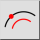

amp;Keskne (läbi punkti)
Tööriistariba / ikoon:


Menüü: amp;Joonista > amp;Arc > amp;Keskne (läbi punkti)
Otsetee: A, G
Käsklused: arcconcentricthrough | ag
Tööriistariba / ikoon:


Selle tööriistaga saate luua kontsentrilisi kaari, mis läbivad määratud punkti.